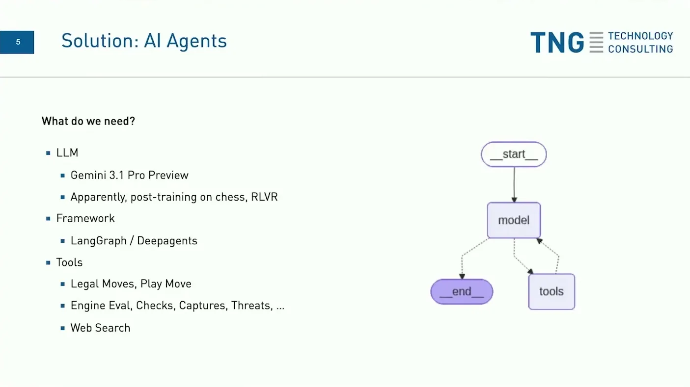
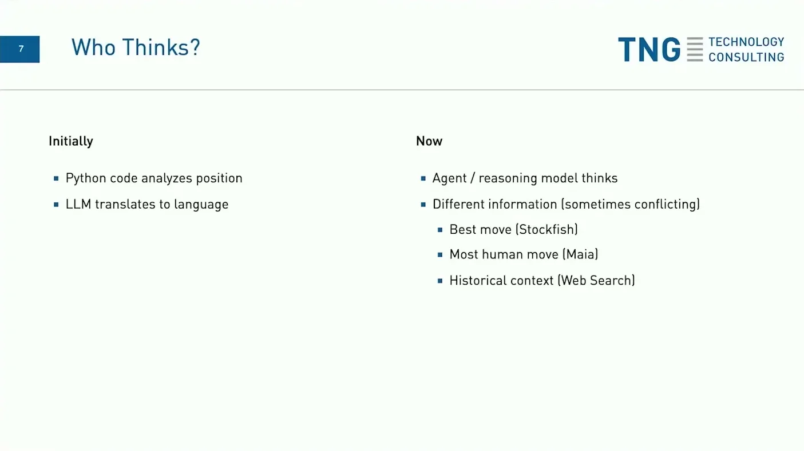
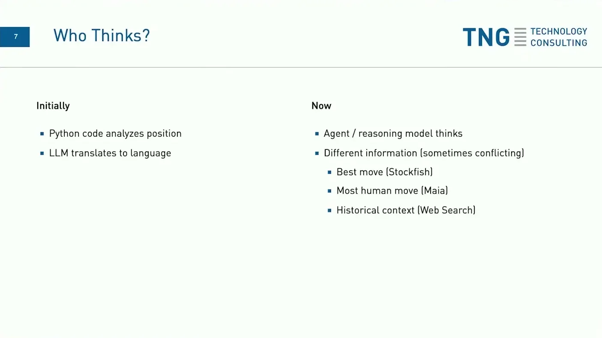
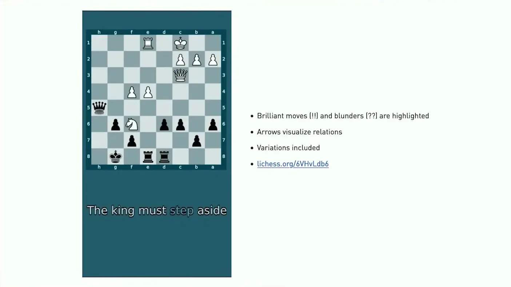
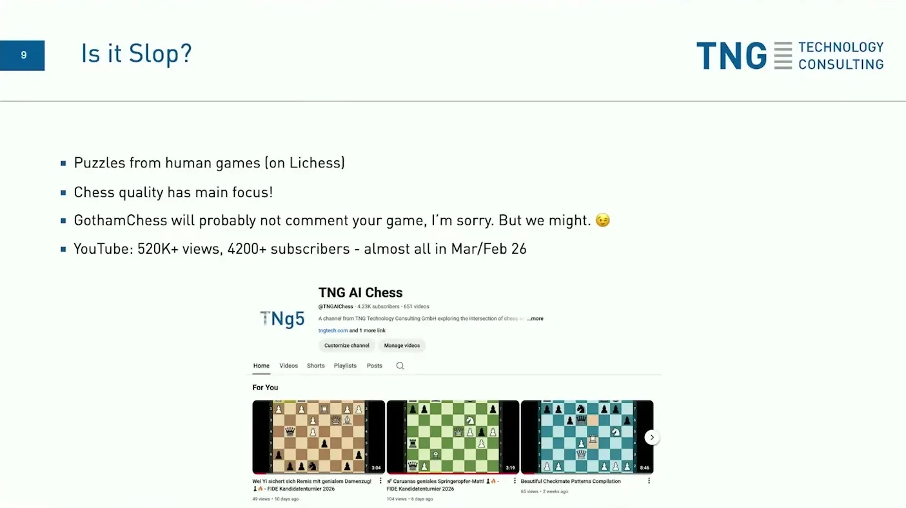

Running a Chess YouTube Channel entirely by AI
TNG runs a nightly Lichess-to-YouTube pipeline combining a chess engine, an LLM narrator with legal-moves and web-search tools, reasoning-model position analysis, at 20-30 cents per video with a tracked error rate.
If you only read one thing
- The pipeline combines a traditional chess engine (strong at playing, weak at explaining) with an LLM agent given tools for legal moves, checks/captures/threats, and web search, since neither alone can both play and explain chess well.
- Reasoning models let the agent think about positions itself rather than routing pre-computed engine output through an LLM for description only; Grok 4 was the best model for this as of last autumn, and Gemini 3 Pro is now the best the speaker has seen on chess.
- Average cost is about 20-30 cents per video, and roughly 1 in 20 videos has a noticeably wrong description (e.g., a missed checkmate), which the speaker treats as a signal to investigate rather than pure error.
The reasoning agent sits inside a LangGraph model-tools loop on top of Stockfish, Maia, a checks/captures/threats tool, and web search, calling them itself rather than having a script pre-assemble the position before handing it off (ours).
Why this talk is a blueprint, not a take (ours)
Scope: TNG's own nightly pipeline that turns Lichess games into narrated, fully AI-produced YouTube chess-analysis videos; not a general content-automation product for other domains.
A working reference architecture where a reasoning model (Gemini 3.1 Pro, running inside a LangGraph model-tools loop) directly calls a chess engine (Stockfish), a human-likeness model (Maia), a checks/captures/threats tool, and web search to both play and explain chess, then hands its script to ElevenLabs V3 for narration. It ships real cost (about 20-30 cents per video) and error-rate (about 1 in 20 videos) figures from an unmonetized channel that already has meaningful traction.
Prerequisites the talk implies:
- A reasoning-capable model good enough at the target domain to call tools mid-reasoning rather than needing a script to pre-assemble information for it
- A domain engine or ground-truth source (their example is Stockfish) that is strong at the task but not good at explaining itself
- An orchestration framework (LangGraph/Deepagents in their case) that supports a model-tools loop
- A tolerance for occasional visibly wrong output, since the team posts automatically without a human pre-check
- A downstream narration/production step (they use ElevenLabs V3) to turn agent output into a finished video
What the talk does not say:
- No team size or engineering hours spent building and maintaining the pipeline
- No detail on how the checks/captures/threats and legal-move tools were built, only what they do
- No revenue or monetization plan; the speaker states the channel currently runs at a net loss
- No explanation of how conflicting information from Stockfish, Maia, and web search gets reconciled when they disagree
- No description of how the roughly 1-in-20 wrong-description rate gets caught or corrected after publishing
If you were to replicate one thing first: Start by pairing a strong domain engine or ground-truth tool with a reasoning model that can call it directly and decide what to surface, rather than pre-scripting what information the model gets to see.
| Component | What it does (from the talk) | Evidence | Slide |
|---|---|---|---|
| LangGraph / Deepagents | Orchestration framework running the model-tools loop (start, model, tools, back to model) that lets the agent call tools mid-reasoning. | 05:20 |  |
| Gemini 3.1 Pro Preview (reasoning agent) | Reasons about positions directly rather than having pre-computed engine output routed to it for description only; apparently post-trained on chess with RLVR. | c2 · 04:37 | |
| Legal moves / play move tool | Prevents illegal moves and lets the agent play, take back moves, and explore variations. | c3 · 06:41 | |
| Checks/captures/threats (CCT) tool | Surfaces multiple candidate moves, including bad ones, so the agent can explain why a move a human might consider is actually wrong. | c3 · 06:41 | |
| Stockfish | Chess engine supplying the best-move evaluation for a position. | 09:20 |  |
| Maia | Supplies the most human-likely move for comparison against Stockfish's best move. | 09:20 | |
| Web search tool | Adds historical context to the narration. | c3 · 06:41 | |
| ElevenLabs V3 | Text-to-speech with expressive audio tags used to narrate the final video. | c5 · 09:50 |  |
| Nightly Lichess ingestion | Downloads games from Lichess each night and runs a background analysis pass before the agent's deeper analysis. | c1 · 04:37 |  |
| Cost and error tracking | Tracks per-video cost, about 20-30 cents, and a roughly 1-in-20 rate of notably wrong descriptions treated as a signal to investigate. | c7 · 13:31 |  |
Why chess engines and LLMs need to be combined
- Chess engines have been strong for decades but can't explain chess well, while LLMs can produce fluent language but can't play chess well on their own, so the system combines both.
- The agent is built on top of Gemini 3 Pro, which the speaker says is the best model he has seen so far on chess and appears to have had in-depth post-training for it.
- Strong at playing for decades
- Can't explain moves well
- Fluent at describing
- Can't play chess well alone
“we've had really good chess engines for multiple yeah, decades actually. And but they can't really explain chess well. On the other hand, we have now LLMs, they can well, say um have words and describe things, but they can't play chess well”
said at 04:37“Gemini 3 but 1 Pro which recently came out is actually like the best model I seen so far on on chess. I'm pretty sure they did some done some yeah, in-depth post training on the model”
said at 04:37Tool set given to the agent
- The agent runs inside a LangGraph/Deepagents model-tools loop and has tools for legal moves and playing moves (to prevent illegal moves and let it take back moves and explore variations), Stockfish as its chess engine for best-move evaluation, a checks/captures/threats (CCT) tool, and web search for historical context.
- The checks/captures/threats tool deliberately surfaces multiple candidate moves, including bad ones, so the agent has material to describe why some moves a human might consider are actually wrong.
“what we're giving the the LLM now in this situation is not only the best move, but we're giving it also access to checks, captures and threats because it otherwise might might miss that”
said at 06:41Reasoning models changed who does the thinking
- Originally, Python scripts analyzed positions and assembled information (check moves, engine evaluation) that was then handed to the language model purely for description.
- When reasoning models arrived, the agent itself could reason about positions directly and call tools at the right point, now pulling from different and sometimes conflicting sources: the best move from Stockfish, the most likely human move from a model called Maia, and historical context from web search.
- Grok 4 was the best model for this as of last autumn.
- Python script analyzes the position
- Assembles engine output
- Hands off to the LLM to describe only
- Agent reasons about the position itself
- Calls tools at the right point
- Reconciles Stockfish, Maia, and web search
“the best model which we've been using like in in autumn last year was Grok 4. Surprisingly, that was sort of the best one”
said at 08:16Production pipeline and output
- Games are downloaded from Lichess nightly, analyzed in the background, run through the agent for deeper analysis, converted into an intermediate format, and rendered into narrated video using ElevenLabs V3 text-to-speech (including expressive audio tags), with the agent itself choosing which squares to highlight and arrows to draw.
- The channel has reached about 500,000 views and just over 4,000 subscribers, with most subscriber growth in the last month.
“we then use 11 Labs V3 for text-to-speech. Yeah, it's actually pretty nice that there are now also these audio tags like I can put this excited in there and it would then sound excited”
said at 09:50“we've got a YouTube channel and um yeah, currently it's like something like 500k views. And yeah, more than 4,000 subscribers. Most of them actually were um yeah, subscribed within the last month”
said at 11:27Cost, error rate, and monetization
- The average cost per video is about 20-30 cents, though longer videos can cost multiple euros; the team is not currently optimizing cost, preferring thorough descriptions over efficiency, even though there are known redundant tool calls.
- Roughly 1 in 20 videos has a notably wrong description, such as a missed checkmate, which the speaker says is usually informative about a missing tool call; the channel is not yet monetized and currently runs at a net loss.
“it's um something on the order of, yeah, 20-30 cents, something like that. So, I mean, we also have created a couple of other videos which are like uh much much longer, and there it can also get to euros”
said at 13:31“the error rate is actually pretty low. So, I would say every 20th um video maybe has a a very weird description in which there's I don't know, a checkmate uh and uh that's missed or something like that”
said at 13:00Commentary (ours)
The 1-in-20 error rate and the shift toward automated posting without a human pre-check suggests the team is treating occasional wrong output as an acceptable tradeoff for scale, which may not generalize to domains where a wrong explanation is more costly than a wrong chess line (ours).

Underlying detail — every claim, typed and timestamped (8)
| Stance | Claim | t |
|---|---|---|
| asserts | Chess engines have been good for decades but can't explain chess well, while LLMs can describe things but can't play chess well, requiring a combination of both. | 04:37 |
| asserts | Gemini 3 Pro is the best model the speaker has seen so far on chess, likely due to in-depth post-training. | 04:37 |
| asserts | The checks/captures/threats tool gives the agent access to multiple candidate moves, including bad ones, so it can describe why moves a human might consider are wrong. | 06:41 |
| asserts | The best model the team used for agentic chess reasoning as of last autumn was Grok 4. | 08:16 |
| asserts | The pipeline uses ElevenLabs V3 for text-to-speech, including audio tags that let the narration sound excited when tagged. | 09:50 |
| asserts | The YouTube channel has reached about 500,000 views and more than 4,000 subscribers, with most subscriber growth in the last month. | 11:27 |
| asserts | The average cost per video is about 20-30 cents, though some longer videos cost multiple euros. | 13:31 |
| asserts | Roughly 1 in 20 videos has a notably wrong description, such as a missed checkmate, usually caused by a missing tool call. | 13:00 |
Machine-readable copy embedded in this page (script#ontology) and in the corpus ontology.